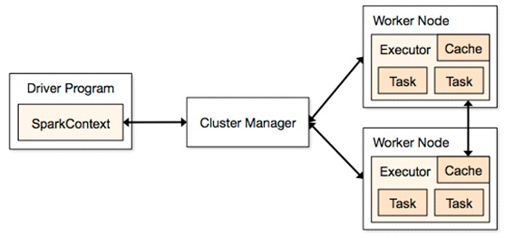

| 第三方模块组件集成 |
Although Hadoop captures the most attention for distributed data analytics, there are alternatives that provide some interesting advantages to the typical Hadoop platform.
Apache Spark is a fast and general-purpose cluster computing system. It is a scalable data analytics platform that incorporates primitives for in-memory computing and therefore exercises some performance advantages over Hadoop's cluster storage approach.
Apache Spark provides high-level APIs in Java, Scala and Python, and an optimized engine that supports general execution graphs. It also supports a rich set of higher-level tools including Spark SQL for SQL and structured data processing, MLlib for machine learning, GraphX for graph processing, and Spark Streaming.
Although Spark was created to support iterative jobs on distributed datasets, it's actually complementary to Hadoop and can run side by side over the Hadoop file system. There are several methods to run Spark in cluster mode, which include YARN, Mesos and Standalone.
Spark applications run as independent sets of processes on a cluster, coordinated by the SparkContext object in your main program (called thedriver program). Specifically, to run on a cluster, the SparkContext can connect to several types of cluster managers (either Spark’s own standalone cluster manager or Mesos/YARN), which allocate resources across applications. Once connected, Spark acquires executors on nodes in the cluster, which are processes that run computations and store data for your application. Next, it sends your application code (defined by JAR or Python files passed to SparkContext) to the executors. Finally, SparkContext sends tasks for the executors to run.

There are several useful things to note about this architecture: